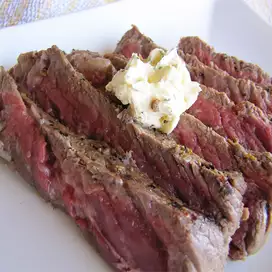

Beer steak recipe

Description
Grilled steak with a simple beer marinade!
Ingredients
- 4 (1 pound) rib-eye steaks
- 2 tablespoons sea salt
- 2 tablespoons lemon pepper
- 2 cans beer of choice
Steps
- Place steaks in a large, shallow container with a lid. Season each side of steak with salt and lemon pepper. Gently pour beer over steaks (making sure the seasoning doesn't wash off). Cover, and refrigerate for 1 to 2 hours.
- Preheat an outdoor grill for high heat and lightly oil the grate.
- Place steaks on preheated grill; discard beer marinade. Cook for 5 minutes per side, or to desired doneness.